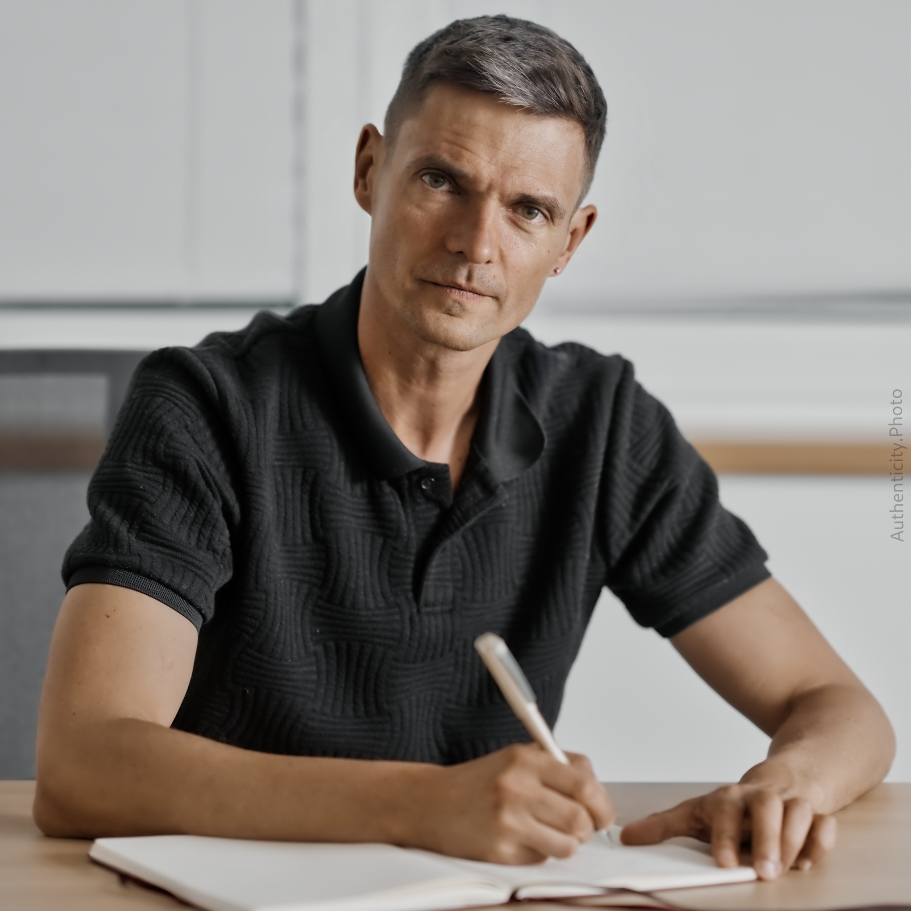

Mentorujem jednotlivcov aj tímy
Najčastejšie oblasti s ktorými klienti prichádzajú
Efektívne fungovanie v korporátnom prostredí
Rozvoj mindset-u pre lepšiu orientáciu v procesoch, prácu s veľkým počtom ľudí a vnímanie meetingov ako produktívnej súčasti práce
Motivácia a vedenie tímov
Vytvorenie prístupov k motivovaniu nevýkonných členov tímu a maximalizácii potenciálu talentovaných zamestnancov
Riadenie fluktuácie a zastupiteľnosti
Strategické pristupovanie k odchodu seniorných zamestnancov a budovanie efektívnych systémov zastupiteľnosti v tíme
Poskytovanie a prijímanie spätnej väzby
Rozvoj zručností individuálnej komunikácie a budovanie spokojnosti členov tímu prostredníctvom kvalitnej spätnej väzby
Budovanie sebavedomia a "bezpečného priestoru"
Rozvoj techník pre zvýšenie sebavedomia a vytvorenie podporného pracovného prostredia, ktoré využíva vaše silné stránky
Kariérne plánovanie a navigácia
Mapovanie kariérnych ciest, príprava na manažérske pozície a identifikácia oblastí pre ďalší rozvoj na základe vašich talentov
Projektové poradenstvo a komunikácia s klientmi
Rozvoj kľúčových kompetencií v komunikácii, konfrontácii a challenge klientov v roli projektového konzultanta
Prioritizácia a riadenie času
Stratégie na redukciu multitaskingu, zameranie sa na jednotlivé úlohy a efektívne riadenie pracovného času
Manažment pracovnej záťaže a delegovanie
Identifikácia spúšťačov nadmerného preberania zodpovednosti, rozvoj delegovania a predchádzanie vyhoreniu
Prečo konzultácie so mnou?
- Pretože mám dlhoročné skúsenosti. Mám za sebou 20 rokov v IT a z toho 15 rokov v manažmente.- Vnímam a pomenúvam i veci “za oponou”, ktoré zásadne ovplyvňujú dianie vo firme, tíme alebo určujú správanie jednotlivca.
- Dokážem klásť esenčné otázky, ktorými dokážeme získať nové pohľady.
- Som štrukturovaný a záleží mi na výsledku a pridanej hodnote.
Viac o mojej kariére nájdeš na LinkedIn.
Cenník
Súčasnú cenu mám 70 €/hod. Nie som platcom DPH.Ak sa vopred dohodneme na viacej hodín, v cene je započítaná moja telefonická a emailová dostupnosť na operatívnu konzultáciu.
Priestory
Mentoring môžete absolvovať online, v našich priestoroch alebo vo vašej firme. Po dohode je možné mať stretnutie i na inom mieste.Kontaktujte ma. Dáme si nezáväzný rozhovor a prejdeme spolu vašu tému i vhodný nástroj.
Kontakt
valasek@gmail.com +421 949 888 634 Správa cez WhatsApp
Správa cez WhatsApp
Prosím kontaktujte ma správou cez WhatsApp alebo SMS
Referencie
"Se Stanislavem jsem sdílel 4 roky plné výzev a vzájemné inspirace. Během té doby jsem byl jeho kolegou manažerem a také jeho mentorem v řízení jeho týmu. Při zpětném pohledu se však zamýšlím nad tím, kdo byl komu častěji mentorem. Stanislav má jedinečnou schopnost výstižně popisovat kontext a přidávat perspektivu v komplexních otázkách týkajících se osobního rozvoje. Jeho vhledy mi umožňovaly nalézat řešení tam, kde bych je sám nikdy nehledal, a na která bych bez jeho pomoci nepřišel."
"S radosťou poskytujem referenciu pre Stanislava, s ktorým som mala tú česť spolupracovať v rámci mentoringového programu Femme Palette zameraného na posilnenie postavenia žien v IT. Stanislav preukázal mimoriadnu oddanosť programu, pričom neustále ponúkal svoje vedenie s úprimným záujmom podporovať ma a riešiť všetky ciele mentoringu, ktoré sme si stanovili.
Má hlboké pochopenie pre jedinečné silné stránky, ktoré ženy prinášajú do IT manažmentu, najmä ich kolaboratívny štýl vedenia, pozornosť k detailom a odolnosť.
Stanislav je nielen štedrý so svojím časom a vedomosťami, ale tiež sa otvorene delí o svoje životné skúsenosti, čím vytvára podporné prostredie, ktoré podporuje učenie a budovanie sebavedomia. Jeho ochota pomáhať, spolu s jeho hlbokým porozumením IT, z neho robí vynikajúceho mentora a advokáta pre napredovanie žien v technológiách.
Stanislava vrelo odporúčam pre akékoľvek budúce mentoringové role, pretože jeho vášeň pre diverzitu a posilnenie postavenia výrazne zvyšuje kvalitu mentorstva a posilňuje budúcnosť lídrov v IT."
Vzdelanie
Mentorovaním jednotlivcov a vo firmách ako Siemens Healthineers, Tietoevry, Make, uLékaře.cz.Ročné školenie v medzinárodnej federácii koučovania ICF realizované v Business Coaching Academy (2025).
The CTO Leadership Foundation Course, CTO Academy (2023).
LeaderShip, SoulAdventure (2022).
Ročný kurz managementu pod vedením Jána Hausmanna (2022).
Managing the Company of the Future, University of London (2015).